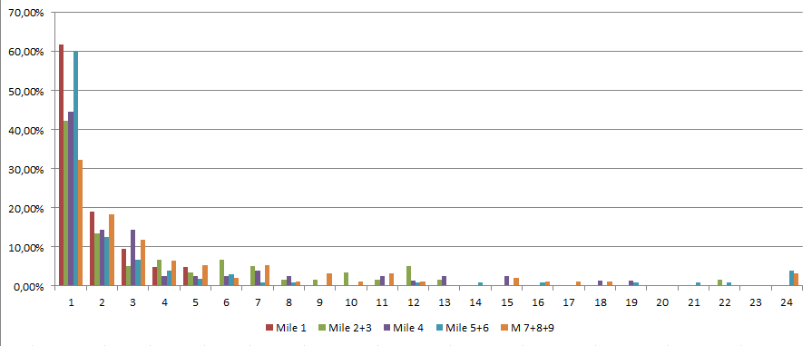

When will you be done?
A Lean Forecasting Case Study
Created by Peter Laufer - @plaufer1980 - May 2015
What is it all about?
- Motivation
- The Project
- The Art of Estimation
- Lean Forecasting
- Data, Data, Data
- What next?
Motivation
Fifty Shades of Grey
- How long will it take?
- When will you be done?
- Will you be ready by ...?
- We have to go live on ...!
- ...
Agile will stop this Madness!
This is not true, because:
- Resources (time, budget, etc.) are always finite.
- You always have to choose between options.
- You need estimates on revenue and cost per option.
The Project
Specs in a Nutshell
- Build a SRP with a touch-optimized Magellan
- Build a touch-optimized Detailed Search Overlay
- Switch to a service-oriented Architecture
- Rebuild the Frontend Templates with Soy
- Don't forget Advertising, SEO and Trackings!
- ... and btw. here's your new team
When will you be done?
The Art of Estimation
Estimation by the Book

The Analogy Method
- How long did comparable projects take?
- How much code can be re-used from other projects?
- How much has to be written from scratch?
no data available
Lines of Code (LOC) Estimation
- measure productivity of devs in LOC/year
- estimate scope of project in LOC
- estimate = project LOC / (avg devs LOC/year * no devs)
- example: 21.000 LOC / (3.500 LOC/year * 3 devs) = 2 years
no data available

Function Point Method
- create detailed project specification (Lastenheft)
- classify all requirements in complexity
- calculate Function Points (FP) per requirement
- calculate total FPs
- track and lookup "FP to time" table
no data available
Agile to the Rescue!
Planning Poker
Planning Poker
- estimate all user stories with the team and derive Story Points
- track teams velocity and calculate release date
- but, detailed estimation is very time consuming
- but, people don't get better at estimating
Integral of Unhappiness
#NoEstimates

highly iterative, no forecast possible
Lean Forecasting
What is Lean Forecasting?
- ... modelling and simulating Software Projects
- ... using proven (and simple) probabilistic tools
- ... based on actual historical data from the team
How do I apply it?
- gather and collect your backlog
- work on tickets
- track cycle times
- calculate forecast on remaining backlog
- (optional) track defect rate, scope creep, refactorings
Data, Data, Data
Milestone 1
| Time | Epics | Tasks | Bugs | "Scope Creep" | avg WIP |
|---|---|---|---|---|---|
| 08.09.-23.09. | 3 | 19 | 2 | 633,33% | 6 |
- Forecast for Project End: Jan 2nd (75%) - Jan 7th (100%)
- Forecast for Milestone 2+3: Oct 30th
Milestone 1, 2, 3
| Time | Epics | Tasks | Bugs | "Scope Creep" | avg WIP |
|---|---|---|---|---|---|
| 08.09.-23.09. | 3 | 19 | 2 | 633,33% | 6 |
| 24.09.-30.10. | 5 | 26 | 1 | 520% | 9 |
| 24.09.-30.10. | 8 | 33 | 2 | 412,50% | 9 |
- Forecast for Project End: Feb 21st (75%) - Mar 3rd (100%)
The Full Project
| Milestone | Time | Epics | Tasks | Bugs | "Creep" | WIP |
|---|---|---|---|---|---|---|
| 1 | 08.09.-23.09. | 3 | 19 | 2 | 633,33% | 6 |
| 2 | 24.09.-30.10. | 5 | 26 | 1 | 520% | 9 |
| 3 | 24.09.-30.10. | 8 | 33 | 2 | 412,50% | 9 |
| 4 | 31.10.-05.12. | 1 | 61 | 20 | 6100% | 13 |
| 5+6 | 06.12.-29.01. | 11 | 70 | 45 | 636,36% | 13 |
| 7+8+9 | 30.01.-12.03. | 14 | 85 | 48 | 607,14% | 16 |
- Forecast for Project End: pre M5 - Mar 12th, pre M7 - May 1st
The Bottom Line
- After 1st milestone we could already forecast, that a release in 2014 was very unlikely.
- After 2nd/3rd milestone we were pretty confident to release within Q1 2015.
- We didn't do a single estimation meeting with the team at all.
Cycle Time Distribution
What next?
Learnings
- Lean Forecasting can help estimating big projects.
- Tracking actual cycle time, defect rate, etc. is really valuable.
- You can accept the deadline if you're able to fight the scope.
- "Negotiation is hard; mediation is easy."
Room for Improvements
- Limit WIP (increases predictability and flow)
- Exclude holidays from calculations
- Try backlog categorization in big and small items
- Be brave, strive for simplicity and descope even more
Thanks!
- The Deadline (Tom DeMarco)
- Replenishment (M. Andrezak, A. Roock)
- Story Points and Velocity: The Good Bits
- no bullshit estimation cards
- The Impact of Lean and Agile Quantified: 2014
- Reliable #NoEstimates Forecasting using Data
- Modeling and Simulating Software Projects (Troy Magennis)
- KanbanSim Downloads